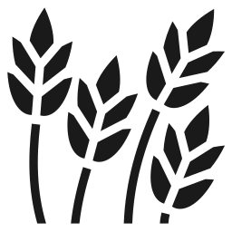
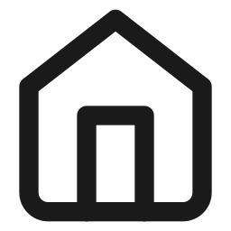

Centro de Serviços Girassol
Cocalzinho de Goiás
O mundo está mudando.
O Entorno de Brasília está mudando.
O Centro-Oeste está entrando em uma nova fase.
A Oportunidade
Um novo corredor econômico está se formando ao redor de Brasília.
Novo aeroporto em estudo para Águas Lindas de Goiás
Expansão de polos industriais no Entorno do DF
Investimentos internacionais mirando a cadeia logística do Centro-Oeste
A BR-070 como eixo entre Brasília, o Centro-Oeste e o Mato Grosso
A pergunta
Quem estará preparado?
Cocalzinho de Goiás
Na rota — não à margem dela.
Um contexto observado
Toda rodovia estratégica precisa de infraestrutura de apoio.
Hoje, entre Ceilândia e Cocalzinho, existem poucas estruturas preparadas para atender esse fluxo crescente.
Poucos pontos de parada seguros. Pouco apoio para veículos de grande porte. Pouca estrutura para quem viaja em família.
CENTRO DE SERVIÇOS
GIRASSOL
Não é um posto de combustíveis.
É um equipamento urbano de apoio à mobilidade regional.
Para quem essa estrutura existe


O que isso significa para Cocalzinho
Geração de empregos diretos e indiretos
Novo fluxo de arrecadação municipal
Movimento econômico local
Valorização da região ao longo da BR-070
Apoio direto ao escoamento do agronegócio
Integração logística regional
Parceria Institucional
Como a parceria se organiza
Próximos Passos
Alinhamento técnico entre as equipes
Visita conjunta ao terreno
Formalização da parceria institucional
Início das obras
“As grandes cidades não crescem por acaso. Elas crescem porque alguém decidiu acreditar antes dos outros.”
O futuro não espera.
Apenas recompensa quem se prepara para ele.
Cocalzinho de Goiás.
Pronta para o que vem a seguir.